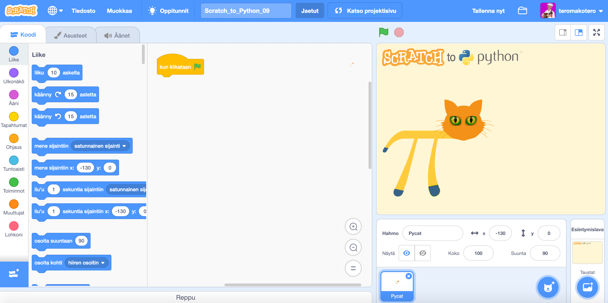
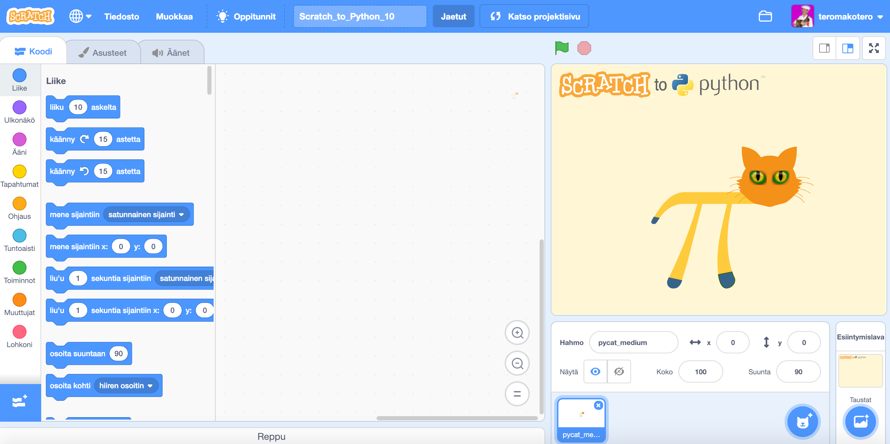
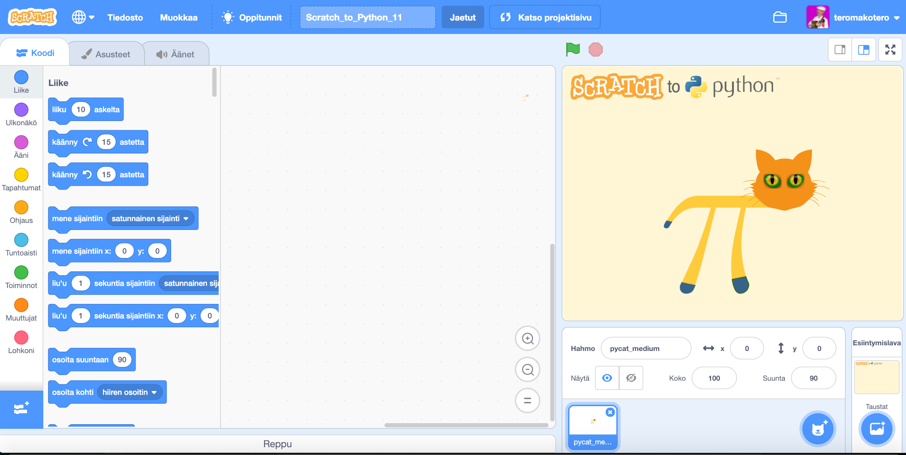

Muuttuja-haasteet
Scratch_to_Python_09
Tässä haasteessa tehdään ohjelma, joka laskee Pycatin askeleet ja näyttää ne näyttämöllä. Tässä haasteessa voi käyttää hyväksi Haaste_04:ää kävelyanimaation tekemisessä.
Tässä haasteessa käytetään pelaajaoppimisen metodia. Ratkaisu voi löytyä yrityksen ja erehdyksen kautta. Yrityksen ja erehdyksen menetelmä on ongelmanratkaisun perusmenetelmiä.
Ohjeet
- Tee muuttuja askeleet
- Animoi Pycat kävelemään
- Laita ohjelma laskemaan ja näyttämään Pycatin askeleet.
- Saat Pycatin takaisin alkuasemaan välilyöntiä napauttamalla.
Haaste 09
Pääset haasteeseen joko "Haaste 09" -otsaketta tai haasteen kuvaa napauttamalla.
 Linkki haasteen Scratch_to_Python_09 -tiedostoon.Video ratkaisusta Scratch_to_Python_09-haasteeseen
Scratch_to_Python_10
Tässä haasteessa opitaan tekemään laskin, joka laskee yhteen-, vähennys-, kerto- ja jakolaskuja käyttäjän valinnan mukaisesti. Käyttäjä valitsee ensin laskutyypin (+, -, * tai /). Sen jälkeen hän antaa luvun 1 ja 2, joille laskutoimitus suoritetaan.
Tässä haasteessa käytetään pelaajaoppimisen metodia. Turhaantuminen ja ärtymyksen tunne ovat oleellinen osa oppimisprosessia.
Ohjeet
- Tehdään kolme muuttujaa: "lasku", "luku1" ja "luku2".
- Tarvitaan kolme "kysy ja odota" -palikkaa. Löydät ne Tuntoaisti-valikosta.
- Käytä ehtolauseita hyväksesi ja laita "lasku"-muuttujan arvoksi käyttäjän valitsema lasku (+, -, * tai /).
- Pyydä käyttäjältä ensimmäinen ja toinen luku "kysy ja odota" -palikoilla ja sijota arvot vastaaviin muuttujiin.
- Ehtolauseiden avulla laita ohjelma laskemaan lasku ja ilmoittamaan se "sano"-palikassa, joka löytyy Ulkonäkövalikossa.
Haaste 10
Pääset haasteeseen joko "Haaste 10" -otsaketta tai haasteen kuvaa napauttamalla.
 Linkki haasteen Scratch_to_Python_10 -tiedostoon.Video ratkaisusta Scratch_to_Python_10-haasteeseen
Scratch_to_Python_11
Tässä haasteessa tehdään ohjelma, jolla voi harjoitella kaksijärjestelmää. Ohjelma näyttää käyttäjälle luvun kaksijärjestelmässä ja käyttäjän pitää kirjoittaa vastaava luku kymmenjärjestelmässä. Ohjelma kertoo oliko vastaus oikein ja jos se meni väärin, kertoo oikean tuloksen.
Tässä haasteessa käytetään pelaajaoppimisen metodia. Turhaantuminen ja ärtymyksen tunne ovat oleellinen osa oppimisprosessia.
Kaksilukujärjestelmässä kantalukuna on 2. Lukujen esittämiseen on siis käytössä vain kaksi lukua (0 ja 1). Alla olevassa taulukossa on kaksilukujärjestelmän luku ja vastaava luku kymmenjärjestelmässä. Esitettyinä on vain ne luvut, joita tässä haasteessa tarvitaan.
Haasteessa 11 käytettävät kaksilukujärjestelmän luvut ja vastaavat luvut kymmenjärjestelmässä
| Kaksilukujärjestelmä | Kymmenlukujärjestelmä |
|---|---|
| 0000 | 0 |
| 0001 | 1 |
| 0010 | 2 |
| 0011 | 3 |
| 0100 | 4 |
| 0101 | 5 |
| 0110 | 6 |
| 0111 | 7 |
| 1000 | 8 |
| 1001 | 9 |
| 1010 | 10 |
| 1011 | 11 |
| 1100 | 12 |
| 1101 | 13 |
| 1110 | 14 |
| 1111 | 15 |
Ohjeet
- Tee neljä muuttuja (1, 2, 4 ja 8). Muuttujien nimet kuvaavat kahden potensseja (20 on 1, 21 on 2, 22 on 4 ja 23 on 8. Tämän tiedon avulla pystyy kaksijärjestelmän luvun muuntamaan kymmenjärjestelmän luvuksi kertomalla potenssin joko yhdellä tai nollalla ja laskemalla ne yhteen. Esim. 0010 olisi 0 * 23 + 0 * 22 + 1 * 21 + 0 * 20 eli 2.
- Asetetaan muuttujien arvoksi joko 0 tai 1 käyttäen hyväksi "valitse satunnaisluku väliltä" -palikkaa Toiminnot-valikosta.
- "Kysy ja odota" -palikkaan Tuntoaisti-valikosta sijoitetaan "yhdistä ja" palikoilla (tarvitsee useampia) näytetään arvotut muuttujien arvot käyttäjälle (kannattaa miettiä, mihin järjestykseen muuttujat laitetaan).
- Ehtolauseen avulla kerrotaan käyttäjälle "sano sekunnin ajan" -palikalla Ulkonäkö-valikosta, oliko vastaus mennyt oikein. Jos ei, kerrotaan käyttäjälle oikea vastaus.
Haaste 11
Pääset haasteeseen joko "Haaste 11" -otsaketta tai haasteen kuvaa napauttamalla.
 Linkki haasteen Scratch_to_Python_11 -tiedostoon.